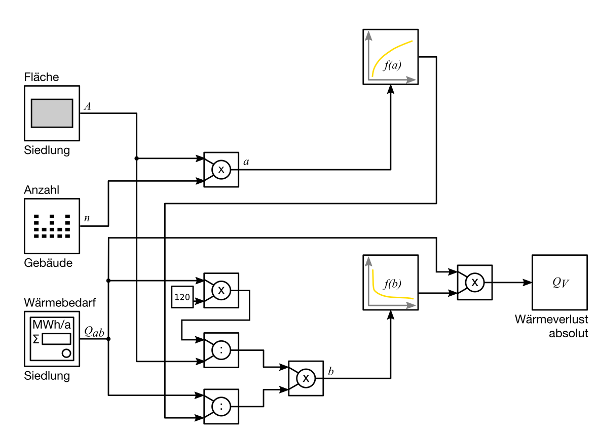

Nahwärmenetze
Entwicklung eines heuristischen Verfahrens
zur Prognose von Nahwärmenetzverlusten
mit statistischen Methoden

In dieser Dissertation werden in Kapitel 2 Aufbau und Anwendung der Software rfWärme beschrieben.
Download: mediaTUM Universitätsbibliothek Technische Universität München